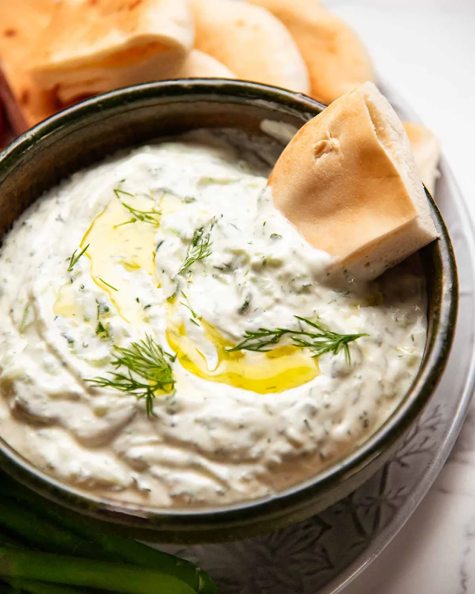

Authentic Greek Tzatziki

Description
This is a truly authentic Greek Tzatziki recipe, exactly how it is made in Greece.
It is creamy, thick, and bursting with fresh garlic and cucumber flavor.
The secret to a perfect tzatziki is straining the cucumber completely so the sauce stays thick
and doesn't become watery. It pairs perfectly with souvlaki, grilled meats, or just warm pita bread!
Ingredients
Main Ingredients
- 500g / 18 oz authentic Greek full-fat yogurt (straggisto)
- 1 large cucumber
- 3-4 garlic cloves, finely minced (adjust to taste!)
- 3 tbsp extra virgin olive oil
- 1 tbsp white wine vinegar or lemon juice
- 1/2 tsp salt
- A small pinch of fresh dill, finely chopped (optional)
Steps
- Prepare the cucumber: Grate the cucumber using the coarse side of a box grater. Place the grated cucumber in a clean kitchen towel or cheesecloth and squeeze it hard with your hands to remove all of its watery juice.
- Combine base: In a medium bowl, add the Greek yogurt, minced garlic, extra virgin olive oil, and white wine vinegar. Stir well until smooth and creamy.
- Mix in cucumber: Add the completely drained cucumber, salt, and fresh dill (if using) to the yogurt mixture. Stir thoroughly until everything is well combined.
- Chill: Cover the bowl and place it in the refrigerator for at least 1-2 hours before serving. This allows the garlic flavor to infuse into the yogurt.
- Serve: Drizzle with a little extra virgin olive oil on top and garnish with a Kalamata olive. Enjoy cold!
Back to Cookbook